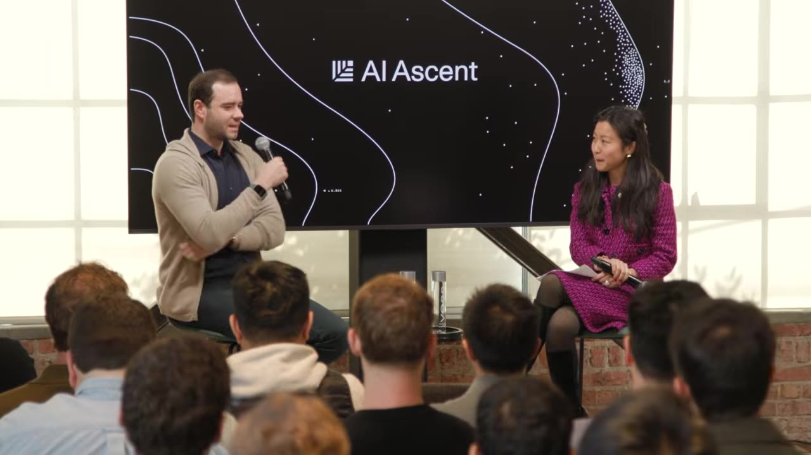
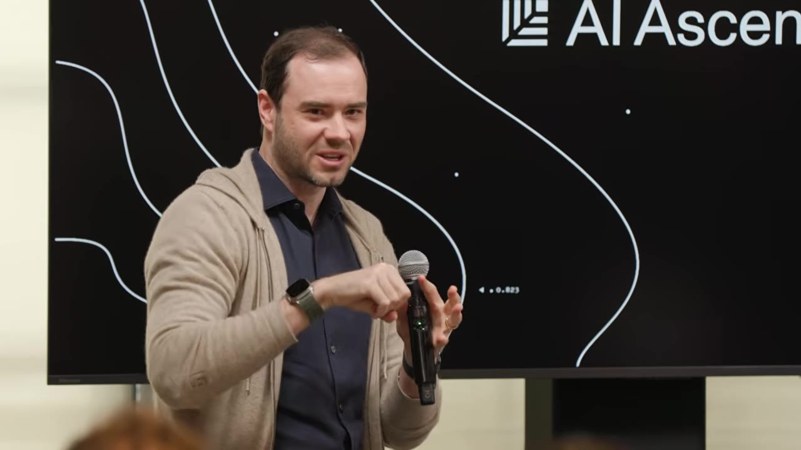

If the coiner of "vibe coding" says he's never felt more behind as a programmer, the ground is shifting under everyone's feet.
Watch on YouTubeA startling opener from Andre OpenAI: the person who coined "vibe coding" says he's never felt more behind as a programmer. Why? Because around December, agentic tools stopped being a helpful crutch and became something fundamentally different — a new computing paradigm.

I do think that it was a very stark transition. A lot of people experienced AI last year as ChatGPT adjacent thing, but you really had to look again because things have changed fundamentally — especially on this like agentic coherent workflow that really started to actually work.— Andre OpenAI
Andre predicts a world where neural nets are the dominant process and CPUs become co-processors for deterministic tasks — the opposite of today's architecture.
You could imagine a device that takes raw video or audio into a neural net and uses diffusion to render a UI that's unique for that moment. The neural net becomes the host process. The CPUs become the co-processor.— Andre OpenAI
Why are models so good at coding and chess but fail at "should I walk or drive to a car wash 50m away"? Andre's answer: the "jagged" shape of capabilities is shaped by what labs put into training data and what gets reinforcement learning environments.

How is it possible that state-of-the-art models will simultaneously refactor a 100,000-line code base or find zero-day vulnerabilities and yet tell you to walk to this car wash?If you're in the circuits that were part of the RL, you fly. If you're in the circuits that are out of the data distribution, you're going to struggle.— Andre OpenAI
Andre makes a clean distinction: vibe coding raises the floor for everyone; agentic engineering preserves the quality bar of professional software.
Vibe coding is about raising the floor for everyone in terms of what they can do in software. Agentic engineering is about preserving the quality bar of what existed before in professional software. You're not allowed to introduce vulnerabilities due to vibe coding.People used to talk about the 10x engineer. This is magnified a lot more. 10x is not the speed-up you gain.— Andre OpenAI
As agents handle the API details — tensor shapes, dtype promotions, the whole PyTorch-to-NumPy minefield — what becomes scarce? Taste, judgment, and the ability to design specs that are detailed enough to direct agents well.
Agents are cataloging internal entities — email addresses, user IDs, payment systems. They'll try to match funds across services using email addresses that can be arbitrary. Someone has to be in charge of the spec, the plan, the taste.I still get a little bit of a heart attack because it's not super amazing code — it's very bloated, lots of copy-paste, awkward abstractions. It works but it's gross.— Andre OpenAI
Andre wrote about AI as "summoning ghosts" — jagged intelligences shaped by data and reward functions, not by intrinsic motivation or curiosity. This framing matters: you treat these things as tools, not animals. You explore what works, what doesn't, and you stay in the loop.
These things are not animal intelligences. If you yell at them, they're not going to work better or worse. They're statistical simulation circuits — the substrate is pre-training (statistics), and then RL is bolting on top.I'm just being suspicious of it and figuring it out over time.— Andre OpenAI
The closing insight: you can outsource your thinking, but you can't outsource your understanding. As intelligence becomes cheap, the bottleneck shifts to the one thing agents still can't do — truly understand what you're trying to build and why it's worth building.
You can outsource your thinking, but you can't outsource your understanding.I still have to somehow get information into my brain. I feel like I'm becoming a bottleneck of just knowing what we're trying to build, why it's worth doing, and how I direct my agents.
These are tools to enhance understanding. You can't be a good director if you still don't understand.— Andre OpenAI
Agentic tools went from "helpful chunks" to "just works" around December — the last time Andre corrected one, he can't remember.
Programming becomes prompting. The context window is your lever over an interpreter that does the work.
Neural nets will become the host process; CPUs become co-processors for deterministic tasks.
Models peak in verifiable domains shaped by training data, fail elsewhere. You need to know which circuits you're in.
Vibe coding raises the floor; agentic engineering preserves the quality bar. Human judgment becomes the new scarcity.